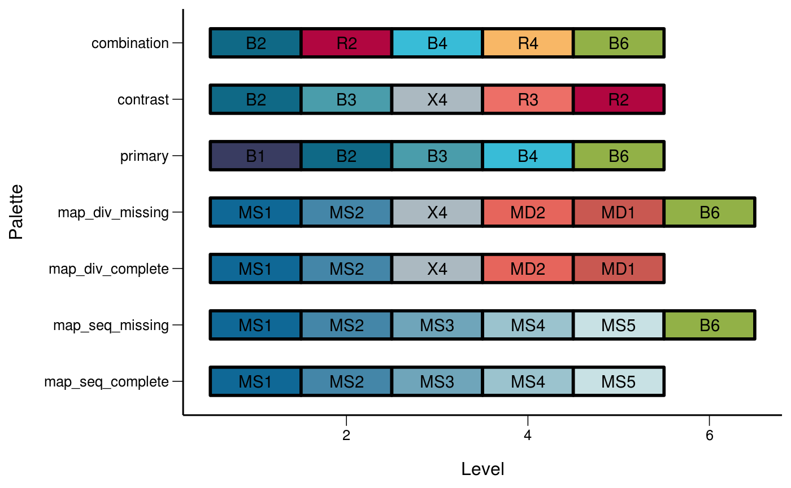

palettes.Rmdlibrary(ggplot2)
library(fhiplot)
#> PACKAGE: org
#> Version 2019.03.08 at 10:07
#> Developed by Richard White, Norwegian Institute of Public HealthThe figure sizes have been customised so that you can easily put two images side-by-side.
df <- data.frame(
gp = factor(rep(letters[1:3], each = 10)),
y = rnorm(30)
)
ds <- plyr::ddply(df, "gp", plyr::summarise, mean = mean(y), sd = sd(y))
# The summary data frame ds is used to plot larger red points on top
# of the raw data. Note that we don't need to supply `data` or `mapping`
# in each layer because the defaults from ggplot() are used.
ggplot(df, aes(gp, y)) +
geom_point() +
geom_point(data = ds, aes(y = mean), colour = 'red', size = 3)